Disclaimer: The documents listed on this page are copyright-protected. By clicking on the [PDF] links below, you confirm that you or your institution have the right to access the corresponding pdf file.
| 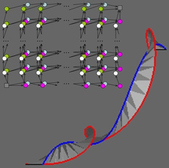 |
Charlie C.L. Wang, and Kai Tang,
"Optimal boundary triangulations of an interpolating ruled surface",
ASME Transactions - Journal of Computing and Information Science in Engineering, vol.5, no.4, pp.291-301, 2005.
[PDF]
Abstract We investigate how to define a triangulated ruled surface interpolating two polygonal directrices that will meet a variety of optimization objectives which originate from many CAD/CAM and geometric modeling applications. This optimal triangulation problem is formulated as a combinatorial search problem whose search space however has the size tightly factorial to the numbers of points on the two directrices. To tackle this bound, we introduce a novel computational tool called multi-layer directed graph and establish an equivalence between the optimal triangulation and the single-source shortest path problem on the graph. Well known graph search algorithms such as the Dijkstra's are then employed to solve the single-source shortest path problem, which effectively solves the optimal triangulation problem in O(mn) time, where m and n are the numbers of vertices on the two directrices respectively. Numerous experimental examples are provided to demonstrate the usefulness of the proposed optimal triangulation problem in a variety of engineering applications. |
|
Xiaogang Jin, Shengjun Liu, Charlie C.L. Wang, Jieqing Feng, and Hanqiu Sun,
"Blob-based liquid morphing",
Computer Animation and Virtual Worlds, Special Issue of International Conference on Computer Animation and Social Agents 2005, vol.16, no.3-4, pp.391-403, 2005.
[Animation]
[PDF]
Abstract In this paper, we propose a novel practical method for blob-based liquid 3D morphing. Firstly, blobby objects are employed to approximate a given polygonal surface through an energy optimization procedure so that the distance between the isosurface of blobs and the given model is minimized. The primitives in the medial axis sphere-tree of a polygonal model are utilized as initial blobs - this greatly improves the robustness and effciency of the blob-based approximation. Secondly, we establish the blob correspondences between two models by sphere cellular matching and hierarchial matching. Finally, we interpolate the parameters of the implicit representation to get the intermediate shapes. Experiments show our method can produce visually pleasing liquid morphing effects. |
| 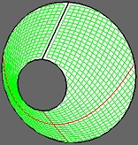 |
Charlie C.L. Wang, Kai Tang, and Benjamin M.L. Yeung,
"Freeform surface flattening by fitting a woven mesh model",
Computer-Aided Design, vol.37, no.8, pp.799-814, 2005. [Errata]
[PDF]
Abstract This paper presents a robust and efficient surface flattening approach based on fitting a woven-like mesh model on a 3D freeform surface. The fitting algorithm is based on tendon node mapping (TNM) and diagonal node mapping (DNM), where TNM determines the position of a new node on the surface along the warp or weft direction and DNM locates a node along the diagonal direction. During the 3D fitting process, strain energy of the woven model is released by a diffusion process that minimizes the deformation between the resultant 2D pattern and the given surface. Nodes mapping and movement in the proposed approach are based on the discrete geodesic curve generation algorithm, so no parametric surface or pre-parameterization is required. After fitting the woven model onto the given surface, a continuous planar coordinate mapping is established between the 3D surface and its counterpart in the plane, based on the idea of geodesic interpolation of the mappings of the nodes in the woven model. The proposed approach accommodates surfaces with darts, which are commonly utilized in clothing industry to reduce the stretch of surface forming and flattening. Both isotropic and anisotropic materials are supported. |
| 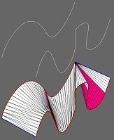 |
Kai Tang, and Charlie C.L. Wang,
"Modeling developable folds on a strip",
ASME Transactions - Journal of Computing and Information Science in Engineering, vol.5, no.1, pp.35-47, 2005. [Errata] [PDF]
Abstract A common operation in clothing and shoe design is to design a folding pattern over a narrow strip and then superimpose it with a smooth surface; the shape of the folding pattern is controlled by the boundary curve of the strip. Previous research results studying folds focused mostly on cloth modeling or in animations, which are driven more by visual realism, but allow large elastic deformations and usually completely ignore or avoid the surface developability issue. In reality, most materials used in garment and shoe industry are inextensible and uncompressible and hence any feasible folded surface must be developable, since it eventually needs to be flattened to its 2D pattern for manufacturing. Borrowing the classical boundary triangulation concept from descriptive geometry, this paper describes a computer-based method that automatically generates a specialized boundary triangulation approximation of a developable surface that interpolates a given strip. The development is achieved by geometrically simulating the folding process of the sheet as it would occur when rolled from one end of the strip to the other. Ample test examples are presented to validate the feasibility of the proposed method. |
| 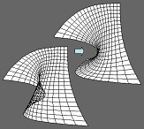 |
Charlie C.L. Wang, and Kai Tang,
"Non-self-overlapping Hermite interpolation mapping: a practical solution for structured quadrilateral meshing",
Computer-Aided Design, vol.37, no.2, pp.271-283, 2005.
[PDF]
Abstract This paper addresses the problem of constructing a structured quadrilateral grid inside a given four-sided 2D region by a particular boundary-conforming mapping scheme - Hermite Interpolation Mapping (HIM). When the four given boundary curves are concave and convoluted, all boundary-conform mapping methods suffer from potential self-overlapping problem. Under HIM, the geometry of the grid depends on both the four boundary curves and the tangent vector functions associated with the curves. While the four boundary curves are fixed, the tangent functions in HIM can be varied to suit the need of controlling the characteristics of the mesh inside the given region so to prevent self-overlapping. Besides tangent functions, the four twist vectors at the corners of the region can also be adjusted to influence the distribution of the inner grid elements. In our approach, a constrained functional optimization scheme is adopted to adjust the tangent functions and the twist vectors, adaptive to the geometry of the boundary curves, so that the resulting HIM will be free of self-overlapping. The optimization is carried out on the shape control energy that measures the overall mesh quality of the underlying HIM while the self-overlapping is strongly prevented in the form of constraints to the optimization. Experimental results show the promise of the proposed method as a practical and effective solution for structured grid generation. |
| 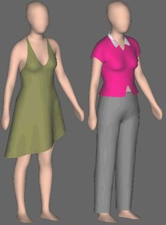 |
Charlie C.L. Wang, Yu Wang, and Matthew M.F. Yuen,
"Design automation for customized apparel products",
Computer-Aided Design, vol.37, no.7, pp.675-691, 2005.
[PDF]
Abstract This paper presents solution techniques for a three-dimensional Automatic Made-to-Measure (AMM) scheme for apparel products. Freeform surface is adopted to represent the complex geometry models of apparel products. When designing the complex surface of an apparel product, abstractions are stored in conjunction with the models using a non-manifold data structure. Apparel products are essentially designed with reference to human body features, and thus share a common set of features as the human model. Therefore, the parametric feature-based modeling enables the automatic generation of fitted garments on differing body shapes. In our approach, different apparel products are each represented by a specific feature template preserving its individual characteristics and styling. When the specific feature template is encoded as the equivalent human body feature template, it automates the generation of made-to-measure apparel products. The encoding process is performed in 3D, which fundamentally solves the fitting problems of the 2D tailoring and pattern-making process. This paper gives an integrated solution scheme all above problems. In detail, a non-manifold data structure, a constructive design method, four freeform modification tools, and a detail template encoding/decoding method are developed for the design automation of customized apparel products. |
| 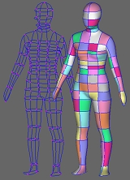 |
Charlie C.L. Wang,
"Parameterization and parametric design of mannequins",
Computer-Aided Design, vol.37, no.1, pp.83-98, 2005.
[PDF]
[Project Page - with Code]
Abstract This paper presents a novel feature based parameterization approach of human bodies from the unorganized cloud points and the parametric design method for generating new models based on the parameterization. The parameterization consists of two phases. Firstly, the semantic feature extraction technique is applied to construct the feature wireframe of a human body from laser scanned 3D unorganized points. Secondly, the symmetric detail mesh surface of the human body is modeled. Gregory patches are utilized to generate G1 continuous mesh surface interpolating the curves on feature wireframe. After that, a voxel-based algorithm adds details on the smooth G1 continuous surface by the cloud points. Finally, the mesh surface is adjusted to become symmetric. Compared to other template fitting based approaches, the parameterization approach introduced in this paper is more efficient. The parametric design approach synthesizes parameterized sample models to a new human body according to user input sizing dimensions. It is based on a numerical optimization process. The strategy of choosing samples for synthesis is also introduced. Human bodies according to a wide range of dimensions can be generated by our approach. Different from the mathematical interpolation function based human body synthesis methods, the models generated in our method have the approximation errors minimized. All mannequins constructed by our approach have consistent feature patches, which benefits the design automation of customized clothes around human bodies a lot. |
| 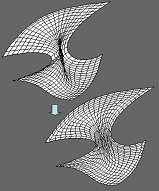 |
Charlie C.L. Wang, and Kai Tang,
"Non-self-overlapping structured grid generation on an n-sided surface",
International Journal for Numerical Methods in Fluids, vol.46, no.9, pp.961-982, 2004.
[PDF]
Abstract Most existing meshing algorithms for a 2D or shell figure requires the figure to have exactly 4 sides. Generating structured grids in the n-sided parametric region of a trimmed surface thus usually requires to first partition the region into 4-sided sub-regions. We address the automatic structured grid generation problem in an n-sided region by fitting a planar Gregory patch so that the partition requirement is naturally avoided. However, self-overlapping may occur in some portions of the algebraically generated grid; this severely limits its usage in most of engineering and scientific applications where a grid system with no self-intersecting is strictly required. To solve the problem, we use a functional optimization approach to move grid nodes in the u - v domain of the trimmed surface to eliminate the self-overlapping. The derivatives of a Gregory patch, which are extremely difficult to compute analytically, are not required in our method. Thus, our optimization algorithm compares favorably at least in terms of speed with some other mesh optimization algorithms, such as elliptic PDE method. In addition, to overcome the difficulty of guessing a good initial position of every grid node for the conjugate gradient method, a progressive optimization algorithm is incorporated in our optimization. Experiment results are given to illustrate the usefulness and effectiveness of the presented method. |
 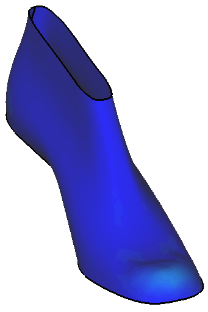 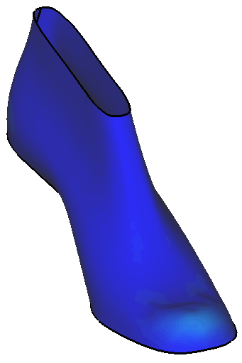 |
Charlie C.L. Wang, and Kai Tang,
"Achieving developability of a polygonal surface by minimum deformation: a study of global and local optimization approaches", The Visual Computer, vol.20, no.8-9, pp.521-539, 2004. [Errata]
[PDF] [Data Set]
Abstract Surface developability is required in a variety of applications in product design, such as clothing, ship hulls, automobile parts, etc. However, most current geometric modeling systems using polygonal surfaces ignore this important intrinsic geometric property. This paper investigates the problem of how to minimally deform a polygonal surface to attain developability, or the so called developability-by-deformation problem. In our study, this problem is first formulated as a global constrained optimization problem, and a penalty function based numerical solution is proposed for solving this global optimization problem. Next, as an alternative to the global optimization approach which usually requires lengthy computing time, we present an iterative solution based on a local optimization criterion which achieves near real-time computing speed. Both approaches preserve the topology and continuity of the original polygonal surface in the case when more than one individual polygonal patches comprise the surface. |
 |
Charlie C.L. Wang,
"CyberTape: an interactive measurement tool on polyhedral surface",
Computers & Graphics, vol.28, no.5, pp.731-745, 2004. [Errata]
[PDF]
Abstract Polyhedral mesh surfaces are widely utilized to represent objects reconstructed from 3D ranged images. In computer-aided engineering, it is desired to not only observe but also measure these three-dimensional objects. This paper presents an approach to measure the curve distance between two points on a polyhedral surface in the manner that simulates dragging a tapeline at the two points. After generating the initial measurement curve through the leading points in linear computing time, an iteration algorithm is presented to approximate stretching the measurement curve on the given polyhedral surface; as an option, the obtained measurement curve can be further stretched to leave the measured surface in some concave places - this likes what a tapeline behaves in reality. This novel interactive tool allows users to perform measurement tasks in an intuitive and natural way in virtual space. Our implementation algorithm can be completed in real time on a standard PC. At the end of the paper, applications of this tool are given to demonstrate its functionality. |
| 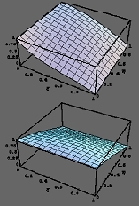 |
Charlie C.L. Wang, and Kai Tang,
"Algebraic grid generation on trimmed surface using non-self-overlapping Coons patch mapping",
International Journal for Numerical Methods in Engineering, vol.60, no.7, pp.1259-1286, 2004.
[PDF]
Abstract Using a Coons patch mapping to generate the structured grid in the parametric region of a trimmed surface can avoid the singularity of elliptic PDE methods when only C1 continuous boundary is given; the error of converting generic parametric C1 boundary curves into a specified representation form is also avoided. However, overlap may happen on some portions of the algebraically generated grid when a linear or naive cubic blending function is used in the mapping; this severely limits its usage in most of engineering and scientific applications where a grid system of non-self-overlapping is strictly required. To solve the problem, non-trivial blending functions in a Coons patch mapping should be determined adaptively by the given boundary so that self-overlapping can be averted. We address the adaptive determination problem by a functional optimization method. The governing equation of the optimization is derived by adding a virtual dimension in the parametric space of the given trimmed surface. Both one-parameter and two-parameter blending functions are studied. To resolve the difficulty of guessing good initial blending functions for the conjugate gradient method used, a progressive optimization algorithm is then proposed which has been shown to be very effective in a variety of practical examples. Also, an extension is on the objective function to control the element shape. Finally, experiment results are shown to illustrate the usefulness and effectiveness of the presented method. |
| 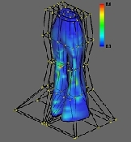 |
Charlie C.L. Wang, and Kai Tang,
"Developability-preserved free-form deformation of assembled patches",
Proceedings of ACM Symposium on Solid Modeling and Applications 2004, Genova, Italy, June 7-9, pp.231-236, 2004.
[PDF]
Abstract A novel and practical approach is presented in this paper that solves a constrained free-form deformation (FFD) problem where the developability of the tessellated embedded surface patches is preserved during the lattice deformation. The formulated constrained FFD problem has direct application in areas of product design where the surface developability is required, such as clothing, ship hulls, automobile parts, etc. In the proposed approach, the developability-preserved FFD problem is formulated as a constrained optimization problem. Different from other contained FFD approaches, the positions of lattice control points are not modified in our algorithm - as their control is insufficient in regards to the developability of all the nodes in the mesh. Moreover, the optimization is performed on the parameters of the mesh nodes rather than directly modifying their 3D coordinates, which avoids the time-consuming inverse calculation of the parameters of every node in a non-parallelepiped control lattice when further deformations are required. |
| 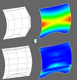 |
Charlie C.L. Wang, Yu Wang, and Matthew M.F. Yuen,
"On increasing the developability of a trimmed NURBS surface",
Engineering with Computers, vol.20, no.1, pp.54-64, 2004.
[PDF]
Abstract Developable surfaces are desired in designing products manufactured from planar sheets. Trimmed NURBS surface patches are widely adopted to represent 3D products in CAD/CAM. This paper presents a new method to increase the developability of an arbitrarily trimmed NURBS surface patch. With this tool, designers can first create and modify the shape of a product without thinking about the developable constraint. When the design is finished, our approach is applied to increase the developability of the designed surface patches. Our method is an optimization based approach. After defining a function to identify the developability of a surface patch, the objective function for increasing the developability is derived. During the optimization, the positions and weights of the free control points are adjusted. When increasing the developability of a given surface patch, its deformation is also minimized and the singular points are avoided. G0 continuity is reserved on the boundary curves during the optimization, and the method to reserve G1 continuity across the boundaries is also discussed in this paper. Compared to other exist methods, our approach solves the problem in a novel way that is close to the design convention, and we are dealing with the developability problem of an arbitrarily trimmed NURBS patch |
| 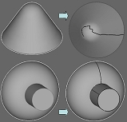 |
Charlie C.L. Wang, Yu Wang, Kai Tang, and Matthew M.F. Yuen,
"Reduce the stretch in surface flattening by finding cutting paths to the surface boundary",
Computer-Aided Design, vol.36, no.8, pp.665-677, 2004.
[PDF]
Abstract This paper presents a method for finding cutting paths on a 3D triangular mesh surface to reduce the stretch in the flattened surface. The cutting paths link the surface boundary and the nodes where the Gaussian curvature is high, and their total length is minimized. First, a linear algorithm for computing an approximate boundary geodesic distance map is introduced; the map encapsulates the undirected geodesic distance from every triangular node to the surface boundary approximately. This is followed by determining the undirected shortest paths passing through all the nodes where the Gaussian curvature is larger than a threshold. The cutting paths walk along the triangular edges of the given surface. Compared with other similar approaches, our method reaches a faster speed, and can deal with surfaces with widely distributed curvatures. |
| 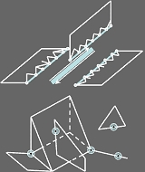 |
Charlie C.L. Wang, Yu Wang, and Matthew M.F. Yuen,
"Feature-based 3D non-manifold freeform object construction",
Engineering with Computers, vol.19, no.2-3, pp.174-190, 2003.
[PDF]
Abstract This paper presents a novel technique for modeling a 3D non-manifold freeform model around a 3D reference model. In order to represent both the design abstractions and the incomplete topological information, first of all, a new non-manifold data structure is defined. Our data structure embodies the functional vitalities of both the boundary representation data structure and the complex-based data structure. Along with our data structure, a set of topological operators is defined to manipulate the entities in the data structure. Based on the non-manifold data structure and the topological operators, we developed a technique to construct 3D freeform objects around a reference model. Intuitive 2D sketches are adopted to specify the detail profile of the constructed object. The construction method is feature based - every reference model has pre-defined features, and the feature template of the constructed object is related to the features of the reference model by feature node encoding. Therefore, the surfaces derived from one reference model can be regenerated automatically on another reference model with the same features. The geometry coverage of our geometric modeling approach includes both manifold and non-manifold 3D freeform objects. |
| 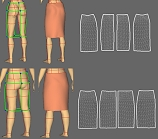 |
Charlie C.L. Wang, Yu Wang, and Matthew M.F. Yuen,
"Feature based 3D garment design through 2D sketches",
Computer-Aided Design, vol.35, no.7, pp.659-672, 2003.
[PDF]
Abstract This paper presents a new approach for intuitively modeling a 3D garment around a 3D human model by 2D sketches input. Our approach is feature based - every human model has pre-defined features, and the constructed garments are related to the features on human models. Firstly, a feature template for creating a customized 3D garment is defined according to the features on a human model; secondly, the profiles of the 3D garment are specified through 2D sketches; finally, a smooth mesh surface interpolating the specified profiles is constructed by a modified variational subdivision scheme. The result mesh surface can be cut and flattened into 2D patterns to be manufactured. Our approach provides a 3D design tool to create garment patterns directly in the 3D space through 2D strokes, which is a characteristic not available in other computer aided garment design systems. The constructed garment patterns are related to the features on a human model, so the patterns can be regenerated automatically when creating the same style of garment for other human models. Our technique can greatly improve the efficiency and the quality of pattern making in the garment industry. |
| 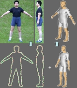 |
Charlie C.L. Wang, Yu Wang, Terry K.K. Chang, and Matthew M.F. Yuen,
"Virtual human modeling from photographs for garment industry",
Computer-Aided Design, vol.35, no.6, pp.577-589, 2003.
[PDF]
Abstract The research presented in this paper is to develop a technique of virtual human modeling for the garment industry from two photographs of a human body in two orthogonal views. Firstly, an efficient segmentation method is applied on the two photographs to obtain the contours of the human body. After that, a template-based feature extraction algorithm is introduced to determine the feature points on the human contours by human morphology rules. Finally, a view-dependent deformation technique is described to construct the virtual human body by using human contours. Our segmentation algorithm is derived from the Mumford-Shah segmentation technology and the level set formulation, and it is accelerated by applying multi-pyramid levels. The deformation technique is related to axial deformation. With our deformation method, the reference silhouettes (the front-view and right-view silhouettes of the template human model) and the target silhouettes (the front-view and right-view silhouettes of the human body from the photographs) are used to deform the template human model, which is represented by a polygonal mesh with predefined features. The self-intersection problem in the axial deformation is solved in our deformation approach. Compared with other virtual human modeling approaches, the speed of constructing the human model is increased; and our deformation technique has better continuity and local deformation properties. At the end of the paper, some potential applications for the garment industry are given to demonstrate the functionality of virtual human models constructed by our approach. |
| 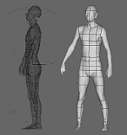 |
Charlie C.L. Wang, Terry K.K. Chang, and Matthew M.F. Yuen,
"From laser-scanned data to feature human model: a system based on fuzzy logic concept",
Computer-Aided Design, vol.35, no.3, pp.241-253, 2003.
[PDF]
Abstract This paper describes the development of a prototype system using fuzzy logic concept for constructing a feature human model, which is to be stored in a 3D digital human model database. In our approach, the feature human model is constructed by unorganized cloud points obtained from 3D laser scanners. Firstly, noisy points are removed, and the orientation of the human model is adjusted; secondly, a feature based mesh generation algorithm is applied on the cloud points to construct the mesh surface of the human model; lastly, semantic features of the human model are extracted from the mesh surface. Compared with earlier approach, our method strongly preserves the topology of a human model; more details can be constructed; and both the robustness and the efficiency of the algorithm are improved. At the end of the paper, in order to demonstrate the functionality of feature human models, potential applications are given. |
| 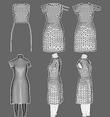 |
Charlie C.L. Wang, and Matthew M.F. Yuen,
"Freeform extrusion by sketched input",
Computers & Graphics, vol.27, no.2, pp.255-263, 2003.
[PDF]
Abstract This paper presents a sketch based mesh extrusion method, which is useful for intuitive, efficient geometric modeling of freeform polygonal objects. With our method, the user can extrude either a closed or open surface from the surface or the boundary of a given mesh by sketched input. Thus, compared to earlier methods, our method provides more flexibility for solving surface modeling problems. Our mesh extrusion algorithm consists of four steps: 1) create a base curve; 2) project extruding strokes; 3) sweep a base curve; and 4) sew adjacent curves. At the end of this paper, examples of our mesh extrusion implementation are shown to demonstrate its functionality. Our freeform extrusion has been implemented as a part of our sketch based modeling system, and the mesh extrusion can be completed in real-time on a standard PC. |
 |
Charlie C.L. Wang, Shana S.F. Smith, and Matthew M.F. Yuen,
"Surface flattening based on energy model",
Computer-Aided Design, vol.34, no.11, pp.823-833, 2002.
[PDF]
Abstract This paper presents a method for three-dimensional surface flattening, which can be efficiently used in three-dimensional computer aided garment design. First, facet model is used to present a complex surface. Then, a spring-mass model based on energy function is used to flatten the 3D mesh surfaces into 2D patterns. The surface elastic deformation energy distribution is depicted by a color graph, which determines a surface cutting line. The method presented here can efficiently solve flattening problems for complex surfaces. The accuracy of a developed surface can easily be controlled locally. Thus, compared to earlier methods, this method provides more flexibility for solving CAD and CAM problems. |
| 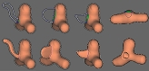 |
Charlie C.L. Wang, and Matthew M.F. Yuen,
"Sketch based mesh extrusion with remeshing techniques",
2001 ASME DETC/CIE, 21st Computers and Information in Engineering Conference,
Pittsburgh, Pennsylvania, September, 2001. (Best Paper Award)
[PDF]
Abstract In this paper, we proposed a useful 3D mesh extrusion method for intuitive, efficient geometric modeling of free-form polygonal models. With our method, the user can sketch two strokes to extrude a polygonal mesh surface. Two remeshing techniques: partial mesh re-triangulation and mesh optimization are described in this paper first. After that, the extrusion algorithm with the remeshing techniques is introduced in detail. The method can be widely used in the modeling of free-form polygonal objects. And at the end of this paper, several examples are given. |